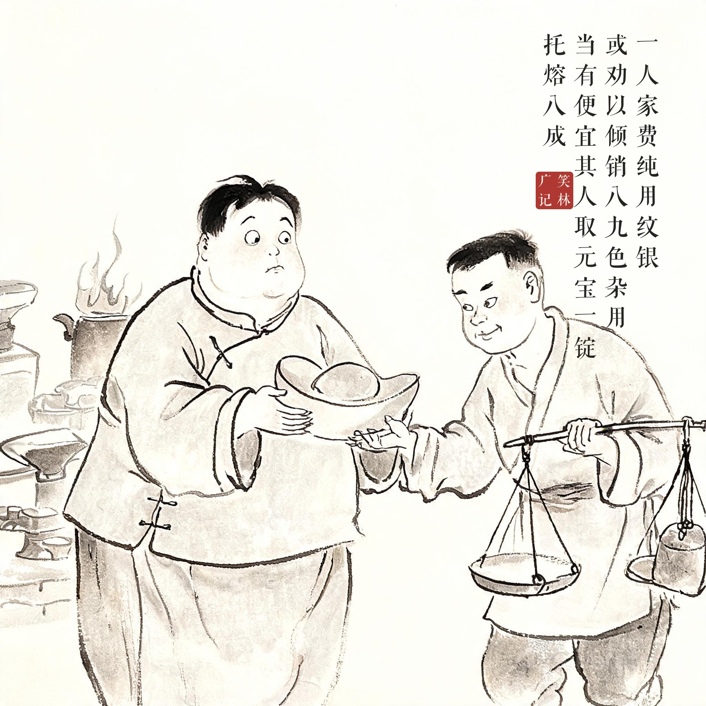
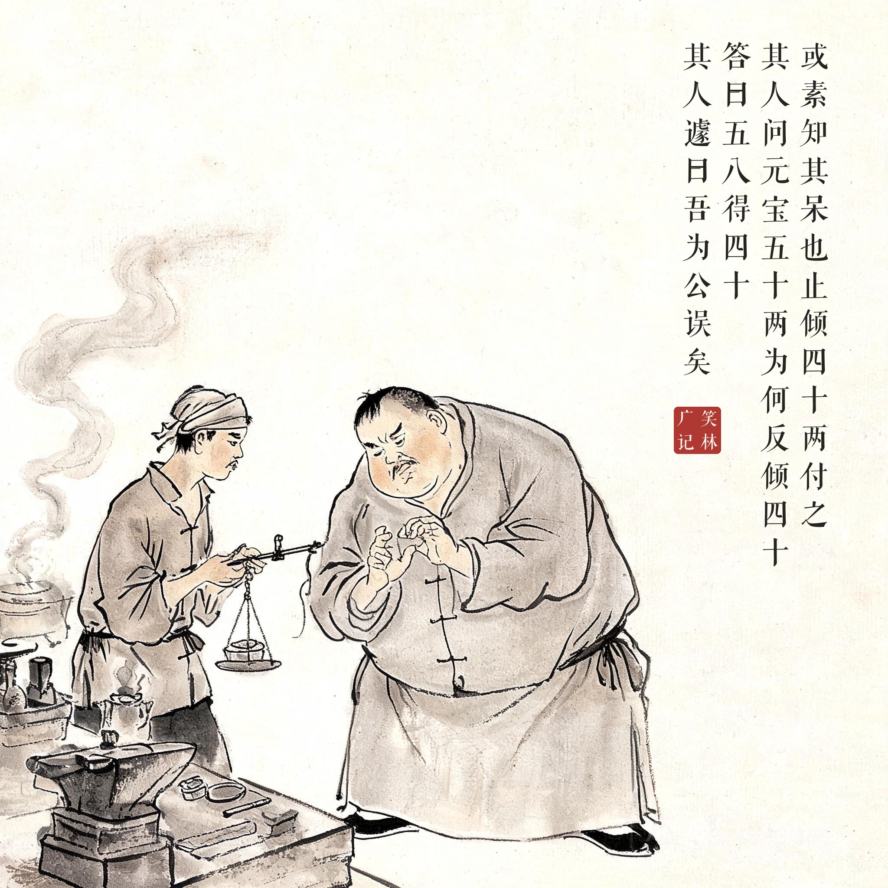

《笑林广记 · 闺风部》（[清]游戏主人纂集）
一人家费纯用纹银，或劝以倾销八九色杂用，当有便宜。其人取元宝一锭，托熔八成。或素知其呆也，止倾四十两付之，而利其余。其人问："元宝五十两，为何反倾四十？"答曰："五八得四十。"其人遽曰："吾为公误矣，用此等银反无便益。"
有个人的家用全用纯银，有人劝他铸成八成色的杂银使用，说有便宜可占。他拿出一锭五十两的元宝，托银匠铸成八成色。银匠深知他呆，只铸了四十两给他，剩下的全吞了。他问："元宝五十两，怎么铸出来只有四十两？"银匠答："五八得四十嘛。"他一听连忙说："是我错怪你了——用这种银子反倒不划算了。"
五八得四十的数学题把被吞的十两变成了合理的口算结果——呆子的糊涂和银匠的精明，在算盘上分出了胜负。